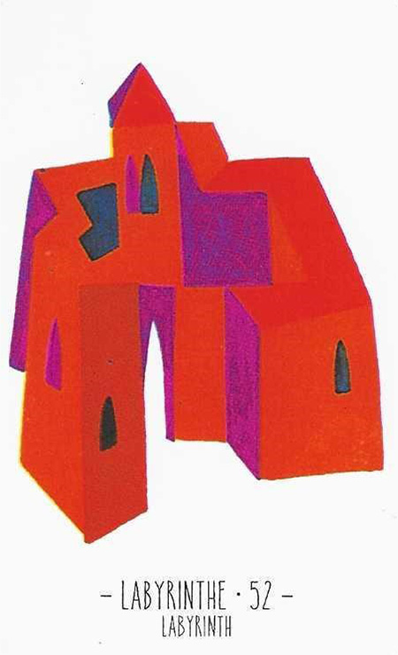

52
미로
Labyrinth부정

그림 읽기
붉은색 커다란 건물이 미로처럼 복잡하고 폐쇄된 공간을 상징합니다. 창문이 많지만 모두 작아 내부가 어두울 것 같은 인상을 줍니다.
미로막다른 길어려운 상황답답함복잡함망설임
핵심 내용
- 답답함·복잡함·망설임·은둔·기다림·갇혀 버림·뒤섞임
- 신뢰가 없거나 관계가 애매함, 불안정한 마음
- 금전적으로 막혀 있음, 시간이 걸림
- 일이나 사업이 꼬여서 진행이 되지 않음
- 군대·기숙사·경찰·대학교(제복 입는 직업)
- 갇혀 있는 상황(감옥·교도소 등), 마음을 알 수가 없음
주요 메시지
폐쇄와 갈등 — 내부적 갈등 또는 외부로부터의 격리
고립과 불안 — 작은 창문이 뜻하는 소통 부족, 외부 세계와의 단절
실생활 적용
대인관계의 신뢰 부족, 애매한 관계
성찰과 성장 — 자신을 성찰하고 내적 성장을 촉진하는 시기
학습 노트
내면의 목소리에 귀 기울이고, 고립에서 벗어날 방법을 고민하라는 조언.
조합 메모

28번+52번 = 파트너십의 금융 혼란, 해결책을 찾기 어려움